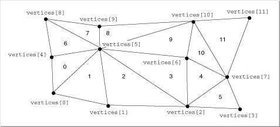

Trigrids
A trigrid is a rectangular grid composed of triangular facets. The triangulation should be serpentine (that is, quadrilaterals are divided into triangles in an alternating fashion) to reduce shading artifacts when using Gouraud or Phong shading.The entire trigrid can have a set of attributes. You may specify an array of attributes that apply to each facet of the trigrid. In this way, for example, you can give each facet of the trigrid a different color. In addition, any or all of the vertices can have a set of attributes.
A trigrid is defined by the
TQ3TriGridDatadata type. See "Creating and Editing Trigrids," beginning on page 4-103 for a description of the routines you can use to create and edit trigrids. Figure 4-17 shows a trigrid.
typedef struct TQ3TriGridData { unsigned long numRows; unsigned long numColumns; TQ3Vertex3D *vertices; TQ3AttributeSet *facetAttributeSet; TQ3AttributeSet triGridAttributeSet; } TQ3TriGridData;
Field Description
numRows- The number of rows of vertices.
numColumns- The number of columns of vertices.
vertices- A pointer to an array of vertices. The first vertex in the array is the lower-left corner of the trigrid. The vertices are listed in a rectangular order, first in the direction of increasing column and then in the direction of increasing row. The number of vertices is the product of the values in the
numRowsandnumColumnsfields.facetAttributeSet- A pointer to an array of facet attribute sets. If this value is not
NULL, the array should contain 2 ((numRows- 1) (numColumns- 1)) elements.triGridAttributeSet- A set of attributes for the trigrid. The value in this field is
NULLif no trigrid attributes are defined.